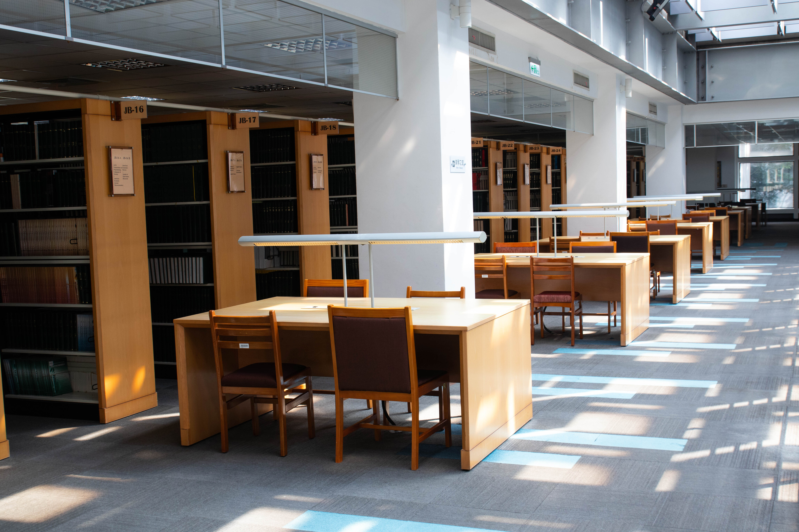

第7ステーション：最新雑誌エリア・人気雑誌エリア
2階にある最新雑誌および人気雑誌エリアには、数百種類の中国語・外国語の最新雑誌が所蔵されており、さまざまな分野を網羅しており、異なる学問や興味のニーズに応えています。
図書館では毎年「雑誌放出イベント」も開催しており、学生が気に入った過去の雑誌を無料で持ち帰ることができ、本が棚に眠るのではなく、生活の中に溶け込むことを目指しています。
なお、2階の雑誌は館内閲覧専用で、貸し出しはできませんのでご注意ください。
2階にある最新雑誌および人気雑誌エリアには、数百種類の中国語・外国語の最新雑誌が所蔵されており、さまざまな分野を網羅しており、異なる学問や興味のニーズに応えています。
図書館では毎年「雑誌放出イベント」も開催しており、学生が気に入った過去の雑誌を無料で持ち帰ることができ、本が棚に眠るのではなく、生活の中に溶け込むことを目指しています。
なお、2階の雑誌は館内閲覧専用で、貸し出しはできませんのでご注意ください。